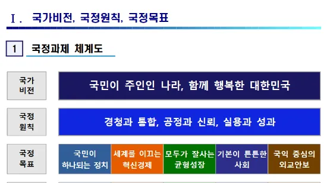

이재명정부 국정목표 및 국정과제

이재명정부 국정목표 및 국정과제
【총평】
- 지난 2025년 6월 4일 치러진 제21대 대통령 선거에서, 이재명 더불어민주당 대통령 후보가 49.42%를 득표함에 따라 대통령에 당선
- 이재명정부의 출범은, 12.3 비상계엄에 따른 윤석열의 내란·외환 행위, 김건희와 명태균·건진법사 관련 국정농단 및 불법 선거 개입, 순직 해병 수사 방해 및 사건 은폐, 윤석열 정부 대통령경호처의 과잉경호 및 표현의 자유 억압, 연구개발 예산 축소로 인한 국가 연구개발 기반 약화, 의과대학 정원 대폭 확대 발표에 따른 의료대란 등 윤석열 정부의 정치, 경제, 사회적 무능에 대한 국민의 냉정한 평가
- 또한 이재명정부가 국가비전을 “국민이 주인인 나라, 함께 행복한 대한민국"으로, 국정원칙을 “경청과 통합, 공정과 신뢰, 실용과 성과"로 표명한 것은, 국민과 소통하는 유능한 정부에 대한 국민적 열망을 담아낸 것으로 이해
- 첫 국정목표를 국민이 하나되는 정치로, 그 추진전략은 국민주권과 민주주의 확립, 정의로운 국민통합의 실현, 문제를 해결하는 유능한 정부를 제시
- 12.3 계엄 및 해제와 그 극복 과정에서의 갈등을 해결하고자 하는 의지와 함께, 대통령 직선제 이후 두번째 맞이한 대통령 탄핵과 그로 인한 조기 대선이라는 불안정한 국내정세를 타개하고자 하는 노력으로 평가- 두번째 국정목표는 세계를 이끄는 혁신경제로, 그 추진전략은 AI 3대 강국 도약, 기초가 탄탄한 과학기술, 혁신으로 도약하는 산업 르네상스, 기후위기 대응과 지속가능한 에너지 전환, 성장을 북돋는 금융혁신을 제시
- 경제적 목표를 두번째로 두었다는 점에서 진보정부는 분배에만 몰입하여 성장을 도외시 한다는 편견에 대한 적극적 대응으로 보이며, 특히 추진전략의 첫번째로 AI와 과학기술이 제시되었다는 점은 32년만에 예산축소로 R&D 분야의 퇴행을 가져온 윤석열 정부의 경제 정책 실패에 대비된 과학기술에 대한 적극적 투자 의지로 이해- 세번째 국정목표는 모두가 잘 사는 균형성장으로, 그 추진전략은 자치분권 기반의 균형성장, 활력이 넘치는 민생경제, 협력과 상생의 공정경제, 희망을 실현하는 농산어촌을 제시
- 추진전략으로 제시된 분권과 균형, 상생과 농산어촌이라는 키워드에서 볼 수 있듯이 분배에 관한 정책적 목표로 평가- 네번째 국정목표는 기본이 튼튼한 사회로, 그 추진전략으로 생명과 안전이 우선인 사회, 내 삶을 돌보는 복지, 국민건강을 책임지는 보건의료, 인구위기를 극복하는 대전환, 누구나 존중받는 일터, 내 삶에 기회를 여는 성평등, 각자의 가능성을 키우는 교육, 함께 누리는 창의적 문화국가로 8가지의 추진전략을 제시
- 추진전략에서 제시된 키워드를 나열해 보면, 안전·복지·보건의료·인구위기·일터·성평등·교육·문화로 국민 체감도가 가장 높은 정책 분야들이 제시- 마지막 다섯번째 국정목표는 국익 중심의 외교안보로, 그 추진전략은 국민에게 신뢰받는 강군, 평화 공존과 번영의 한반도, 세계로 향하는 실용외교를 제시
- 윤석열 정부의 미국 중심 가치 외교에 대한 비판으로 외교의 중심을 국익과 실용으로 제시하고 있으며, 한편 추진전략에 군의 신뢰를 언급하여 지난 12.3 계엄에 군 일부가 개입하여 얻게 된 국민적 불신을 청산하겠다는 의지로 평가
1. 국정과제 체계도
| 국가 비전 | 국민이 주인인 나라, 함께 행복한 대한민국 | ||||
| 국정 원칙 | 경청과 통합, 공정과 신뢰, 실용과 성과 | ||||
| 극정 목표 | 국민이 하나되는 정치 | 세계를 이끄는 혁신경제 | 모두가 잘사는 균형성장 | 기본이 튼튼한 사회 | 국익 중심의 외교안보 |
| 추진 전략 |
|
|
|
|
|
| 123대 국정 과제 | 19개 과제 | 29개 과제 | 23개 과제장 | 37개 과제 | 15개 과제 |
2. 123대 국정과제
2.1. 국정목표1 국민이 하나되는 정치
2.1.1. 전략1 국민주권과 민주주의 확립
- [국정01] ‘진짜 대한민국’을 위한 헌법 개정 국조실
- [국정02] 국민의 군대를 위한 민주적·제도적 통제 강화 국방부
- [국정03] 수사와 기소 분리를 통한 검찰개혁 완성 법무부
- [국정04] 경찰의 중립성 확보 및 민주적 통제 강화 행안부·경찰청
- [국정05] 감사원의 정치적 중립성 및 독립성 강화 감사원
- [국정06] 국민주권 실현을 위한 사법체계 개혁 법무부
- [국정07] 미디어 공공성 회복과 미디어 주권 향상 방통위
- [국정08] 모두의 존엄과 권리가 보장되는 인권선진국 인권위
2.1.2. 전략2 정의로운 국민통합의 실현
- [국정09] 통합과 참여의 정치 실현 국조실
- [국정10] 국민통합을 지향하는 과거사 문제 해결 행안부
- [국정11] 나라를 위한 헌신에 합당한 보상과 예우 실현 보훈부
- [국정12] 전 세대를 아우르는 보훈 체계 구축 보훈부
2.1.3. 전략3 문제를 해결하는 유능한 정부
- [국정13] 충직·유능·청렴에 기반한 활력있는 공직사회 구현 인사처
- [국정14] 국민과 함께 소통하고 혁신하는 정부 행안부
- [국정15] 국민이 체감하는 지속가능발전 기반 확립 국조실
- [국정16] 국민권익을 실현하는 반부패 개혁 권익위
- [국정17] 재정운용의 투명성·책임성 강화 기재부
- [국정18] 성장과 민생에 기여하는 공공기관 경영 혁신 기재부
- [국정19] 민생·안전과 공정·상생을 위한 규제 합리화 국조실
2.2. 국정목표2 세계를 이끄는 혁신경제
2.2.1. 전략 1 AI 3대 강국 도약
- [국정20] AI 3대 강국 도약을 위한 AI고속도로 구축 과기정통부
- [국정21] 세계에서 AI를 가장 잘 쓰는 나라 구현 과기정통부
- [국정22] 초격차 AI 선도기술·인재 확보 과기정통부
- [국정23] 국민의 안전과 보편적 삶의 질 제고를 위한 ’AI 기본사회’ 실현 과기정통부
- [국정24] 세계 최고 AI 민주정부 실현 행안부
- [국정25] 국민이 안심할 수 있는 개인정보 보호체계 확립 개인정보위
2.2.2. 전략 2 기초가 탄탄한 과학기술
- [국정26] 과학기술 5대강국 실현을 위한 시스템 혁신 과기정통부
- [국정27] 기초연구 생태계 조성과 과학기술 인재강국 실현 과기정통부
- [국정28] 세계를 선도할 넥스트(NEXT) 전략기술 육성 과기정통부
2.2.3. 전략 3 혁신으로 도약하는 산업 르네상스
- [국정29] 신성장동력 발굴·육성으로 첨단 산업국가 도약 산업부
- [국정30] 주력산업 혁신으로 4대 제조강국 실현 산업부
- [국정31] 미래 모빌리티와 ‘K-AI 시티’ 실현 국토부
- [국정32] 의료AI·제약·바이오헬스 강국 실현 복지부
- [국정33] 서비스업 경쟁력 제고로 내수·수출 활성화 기재부
- [국정34] 제3벤처붐으로 여는 글로벌 벤처 4대 강국 중기부
- [국정35] 미래 신기술로 성장하고, 글로벌로 도약하는 중소기업 중기부
- [국정36] 경제･산업 도약을 위한 신산업 규제 재설계 국조실
- [국정37] 통상으로 지키는 국익, 흔들림 없는 경제안보 산업부
2.2.4. 전략 4 기후위기 대응과 지속가능한 에너지 전환
- [국정38] 경제성장의 대동맥, 에너지고속도로의 구축 산업부
- [국정39] 재생에너지 중심 에너지 대전환 산업부
- [국정40] 지속가능 미래를 위한 탄소중립 실현 환경부·국조실
- [국정41] 탄소중립을 위한 경제구조 개혁 산업부·국토부
- [국정42] 순환경제 생태계 조성 환경부
- [국정43] 국가 기후적응 역량 강화 환경부
- [국정44] 모두가 누리는 쾌적한 환경 구현 환경부
- [국정45] 4대강 자연성 및 한반도 생물다양성 회복 환경부
2.2.5. 전략 5 성장을 북돋는 금융혁신
- [국정46] 진짜 성장을 뒷받침하는 생산적 금융(국민성장펀드 100조원+α 조성) 금융위
- [국정47] 코리아 프리미엄을 향한 자본시장 혁신 금융위
- [국정48] 디지털자산 생태계 구축 금융위
2.3. 국정목표3 모두가 잘사는 균형성장
2.3.1. 전략 1 자치분권 기반의 균형성장
- [국정49] ‘5극3특’과 중소도시 균형성장 행안부·국토부
- [국정50] 행정수도 세종 완성 국토부·행복청
- [국정51] 2차 공공기관 이전 등 균형성장 거점 육성 국토부·산업부
- [국정52] 주민 삶의 질 향상을 위한 자치분권 역량 제고 행안부
- [국정53] 지방재정 확충으로 자치재정권 확대 및 지역경제 활성화 행안부·기재부
- [국정54] 소멸위기지역 재도약을 위한 지원 강화 행안부
- [국정55] 지역교육 혁신을 통한 지역인재 양성 교육부
- [국정56] 북극항로 시대를 주도하는 K-해양강국 건설 해수부
- [국정57] 교통혁신 인프라 확충 국토부
2.3.2. 전략 2 활력이 넘치는 민생경제
- [국정58] 금융안정과 생산적 금융을 위한 가계부채 관리 금융위
- [국정59] 서민·취약계층을 위한 포용금융 강화 금융위
- [국정60] 국민 생활비 부담 경감 기재부
- [국정61] 다시 일어서는 소상공인, 활기 도는 골목상권 중기부
- [국정62] 주택시장 안정을 위한 주택공급 확대 국토부
- [국정63] 두텁고 촘촘한 주거복지 실현 국토부
2.3.3. 전략 3 협력과 상생의 공정경제
- [국정64] 공정한 시장질서 확립 공정위
- [국정65] 소비자 주권 실현 및 불공정행위 근절 공정위
- [국정66] 금융투자자 및 소비자 권익보호 강화 금융위
- [국정67] 기술탈취는 근절하고, 상생의 기업환경 조성 중기부
2.3.4. 전략 4 희망을 실현하는 농산어촌
- [국정68] 국민 먹거리를 지키는 국가전략산업으로 농업 육성 농식품부
- [국정69] 국가 책임을 강화하는 농정 대전환 농식품부
- [국정70] 균형성장과 에너지 전환을 선도하는 농산어촌 농식품부
- [국정71] 어촌·연안 경제 활성화를 위한 수산‧해양산업 혁신 해수부
2.4. 국정목표4 기본이 튼튼한 사회
2.4.1. 전략 1 생명과 안전이 우선인 사회
- [국정72] 국민안전 보장을 위한 재난안전관리체계 확립 행안부
- [국정73] 재난 피해 최소화를 위한 예방·대응 강화 행안부
- [국정74] 국민안전을 위한 법질서 확립 및 민생치안 역량 강화 법무부·경찰청
- [국정75] 일하는 모든 사람이 건강하고 안전한 나라 노동부
- [국정76] 흔들림 없는 해양주권, 안전하고 청정한 우리바다 해수부
2.4.2. 전략 2 내 삶을 돌보는 복지
- [국정77] 기본적 삶을 위한 안전망 강화 복지부
- [국정78] 지금 사는 곳에서 누리는 통합돌봄 복지부
- [국정79] 장애인 삶의 질 향상과 기본적 권리 보장 복지부
- [국정80] 사람과 동물이 더불어 행복한 사회 농식품부
- [국정81] 사회연대경제 성장 촉진 기재부·행안부
- [국정82] 생애주기별 금융 자산·소득 형성 금융위
2.4.3. 전략 3 국민건강을 책임지는 보건의료
- [국정83] 지속가능한 보건의료체계로 전환 복지부
- [국정84] 지역격차 해소, 필수의료 확충, 공공의료 강화 복지부
- [국정85] 일차의료 기반의 건강‧돌봄으로 국민 건강 증진 복지부
- [국정86] 국민 의료비 부담 완화 복지부
2.4.4. 전략 4 인구위기를 극복하는 대전환
- [국정87] 아이 키우기 좋은 출산·육아 환경 조성 복지부
- [국정88] 아동·청소년의 건강한 성장 및 다양한 가족 지원 여가부
- [국정89] 청년의 정책 참여 확대와 기본생활 지원으로 함께 만드는 미래 국조실 등
- [국정90] 든든한 노후 보장을 위한 연금제도 개선 복지부
- [국정91] 인구가족구조변화 대응 및 은퇴세대 맞춤형 지원 복지부
- [국정92] 인구 변동, 디지털 변화, 기후위기에 대응하는 노동대전환 노동부
2.4.5. 전략 5 누구나 존중받는 일터
- [국정93] 차별과 배제 없는 일터 노동부
- [국정94] 노동존중 실현과 노동기본권 보장 노동부
- [국정95] 일, 가정, 삶이 공존하는 행복한 일터 노동부
- [국정96] 통합과 성장의 혁신적 일자리정책 노동부
2.4.6. 전략 6 내 삶에 기회를 여는 성평등
- [국정97] 기회와 권리가 보장되는 성평등 사회 여가부
- [국정98] 여성의 안전과 건강권 보장 여가부
2.4.7. 전략 7 각자의 가능성을 키우는 교육
- [국정99] AI 디지털시대 미래인재 양성 교육부
- [국정100] 시민교육 강화로 전인적 역량 함양 교육부
- [국정101] 교육격차 해소를 위한 공교육 강화 교육부
- [국정102] 학교자치와 교육 거버넌스 혁신 교육부
2.4.8. 전략 8 함께 누리는 창의적 문화국가
- [국정103] K-컬처 시대를 위한 콘텐츠 국가전략산업화 추진 문체부
- [국정104] 전 국민이 누리고 세계인과 소통하는 K-컬처 문체부
- [국정105] 자유로운 예술 창작 환경 조성 문체부
- [국정106] 모두가 즐기는 스포츠 문체부
- [국정107] 3천만 세계인이 찾는 관광산업 기반 구축 문체부
- [국정108] 미래지향적 디지털·미디어 생태계 구축 방통위
2.5. 국정목표5 국익 중심의 외교안보
2.5.1. 전략 1 국민에게 신뢰받는 강군
- [국정109] 국방 환경 변화에 대비한 정예 군사력 건설 국방부
- [국정110] 한미동맹 기반 전방위적 억제능력을 바탕으로 전시작전통제권 전환 국방부
- [국정111] 강력한 국방개혁으로 전투임무에 집중하는 군체계 확립 국방부
- [국정112] 군인 사기진작을 위한 장병 복무여건 개선 국방부
- [국정113] K-방산육성 및 획득체계 혁신을 통한 방산 4대강국 진입 방사청
2.5.2. 전략 2 평화 공존과 번영의 한반도
- [국정114] 화해·협력의 남북관계 재정립 및 평화공존 제도화 통일부
- [국정115] 국민이 공감하는 호혜적 남북교류협력 추진 통일부
- [국정116] 분단고통 해소와 인도적 문제 해결 통일부
- [국정117] 국민과 함께하는 한반도 평화·통일정책 추진 통일부
- [국정118] 한반도 평화경제 및 공동성장의 미래 준비 통일부
2.5.3. 전략 3 세계로 향하는 실용외교
- [국정119] 국익 중심 실용외교로 주변 4국 관계 증진 외교부
- [국정120] 국제사회 공헌과 참여로 G7+ 외교 강국 실현 외교부
- [국정121] 경제 안보‧통상 위기 극복을 위한 경제외교 역량 강화 외교부
- [국정122] 북핵 문제 해결과 한반도 평화체제를 향한 실질적 진전 추구 외교부
- [국정123] 재외국민 안전과 편익 증진 및 재외동포 지원 강화 외교부·동포청